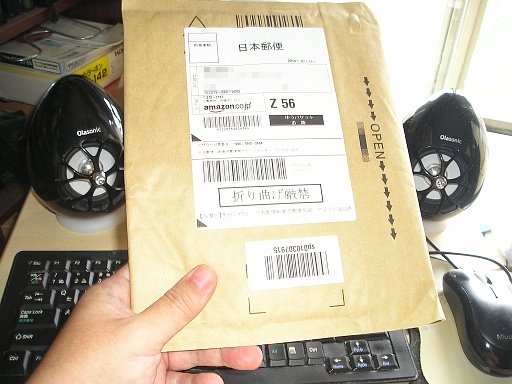
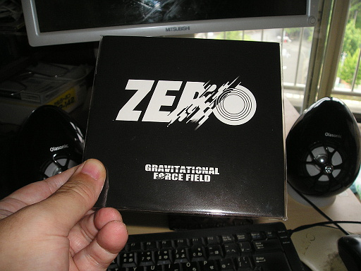

ドラムが平川象士さんということもあり、また Youtube でOfficial Trailer を見て良かったので、Gravitational Force Field の Zero を購入しました。今回は梱包用の封筒が、ちょっとちゃちなものになっていました。これだとちょっと手荒に扱われたら、簡単に CD が割れてしまいそうです。

で開封です。

紙ジャケです。
収録曲は
サウンド的にはロック・インストっぽいかな、という感じです。メンバーはテクニシャン揃いなので、アグレッシブなサウンドの上に、ハイテクニック炸裂です。